1M LeChiffre · 21/09/2026
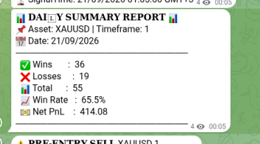
- Win rate
- 65.5%
- Net PnL
- 414.08
PnL shown for 0.1 lot size.
Elie Minassian · Pine Script · Algorithmic trading
A rule-based method for XAUUSD. The trade is marked on TradingView in Pine Script, published as Telegram signals, and explained at lechiffre.online.
The LeChiffre Pine Script runs on the gold chart. Entries, the active session, nearby news, and closed wins stay on the same screen so the decision is the line on the chart.

BUY and SELL marks sit on price, with the trade’s levels readable against the candles.
The active window is shaded — including the London session — so trades stay inside the hours the method uses.
A Forex Factory table on the chart lists upcoming items. The visible rows include U.S. unemployment claims and revised consumer sentiment.
Closed winners are labeled WIN on the chart, next to the entry that produced them.
Paper examples of LeChiffreXtelegram in TradingView’s Strategy Tester, on a $10,000 account. Timeframes in this set are 1-minute, 3-minute, 5-minute, 15-minute, 30-minute, and 4-hour. 7-day reports in this set are 1-minute, 3-minute, and 30-minute. 5-minute, 15-minute, and 4-hour are the 30-day reports. The stronger 30-day results are the 1-minute, 3-minute, 5-minute, and 15-minute runs. PnL shown for 0.1 lot size. These are not an audited live brokerage record.
| Timeframe | Last 7 days | Last 30 days |
|---|---|---|
| 1-minute | +$2,168.61 +21.69% · WR 61.64% (188/305) · PF 1.834 · DD 2.48% | +$6,292.17 +62.92% · WR 60.93% (613/1006) · PF 1.61 · DD 3.55% |
| 3-minute | +$713.14 +7.13% · WR 57.58% (57/99) · PF 1.399 · DD 4.09% | +$5,557.94 +55.58% · WR 64.72% (233/360) · PF 1.96 · DD 2.84% |
| 5-minute | Not in this set | +$3,578.92 +35.79% · WR 65.42% (140/214) · PF 1.761 · DD 3.24% |
| 15-minute | Not in this set | +$3,149.55 +31.50% · WR 71.23% (52/73) · PF 2.267 · DD 2.77% |
| 30-minute | +$61.17 +0.61% · WR 54.55% (6/11) · PF 1.093 · DD 5.63% | +$1,765.95 +17.66% · WR 70.59% (24/34) · PF 2.276 · DD 4.84% |
| 4-hour | Not in this set | +$1,478.75 +14.79% · WR 75.00% (3/4) · PF 3.349 · DD 8.30% |
PnL shown for 0.1 lot size.
1-minute · 30 days · stronger run
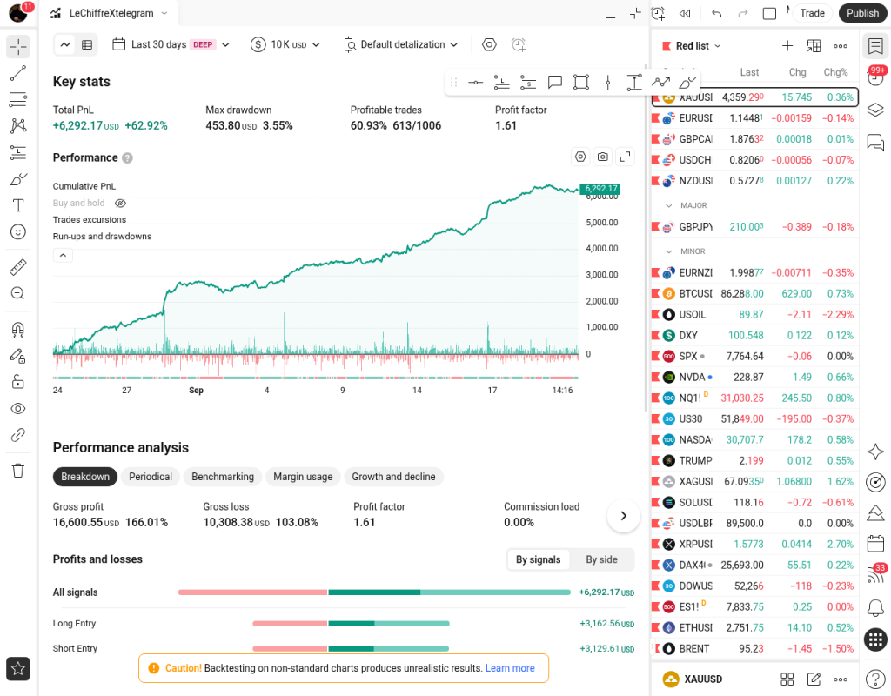
3-minute · 30 days · stronger run
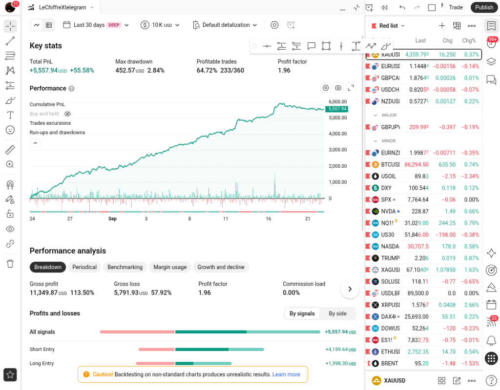
5-minute · 30 days · stronger run
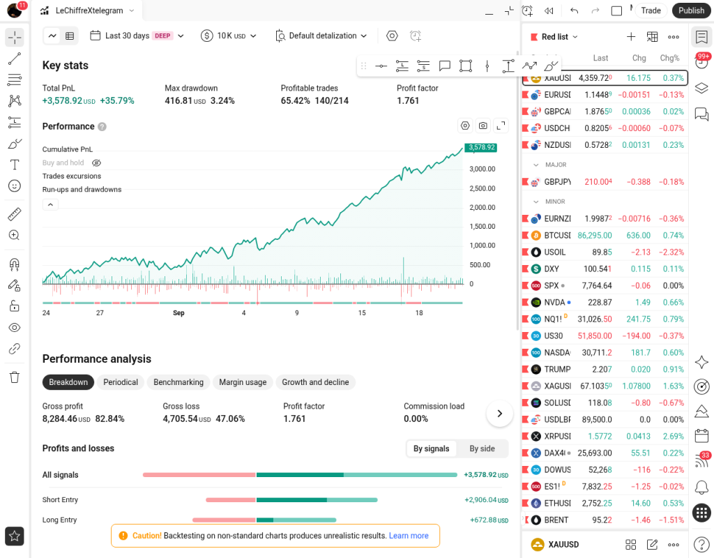
15-minute · 30 days · stronger run
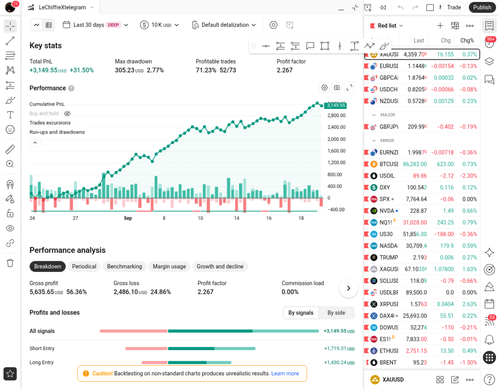
30-minute · 30 days
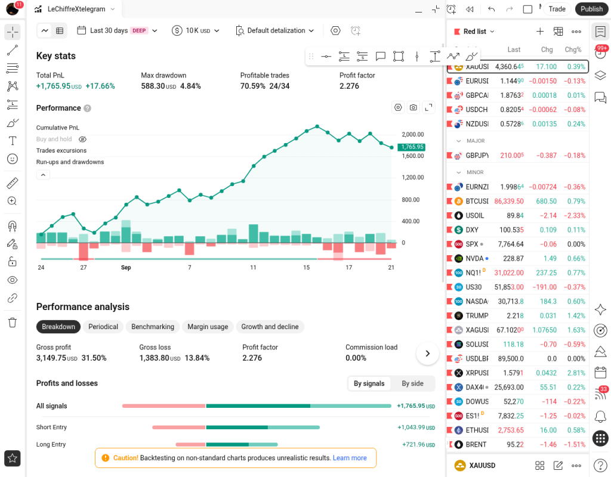
4-hour · 30 days
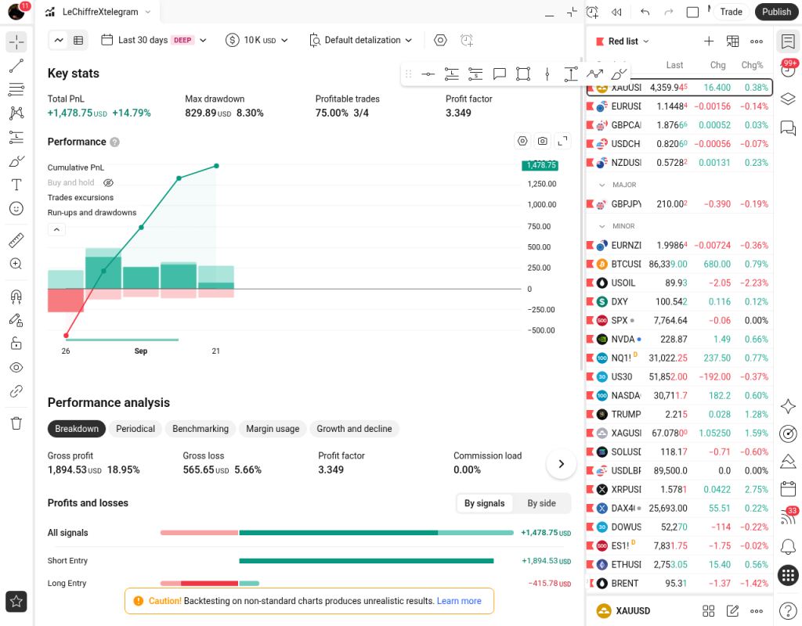
1-minute · 7 days
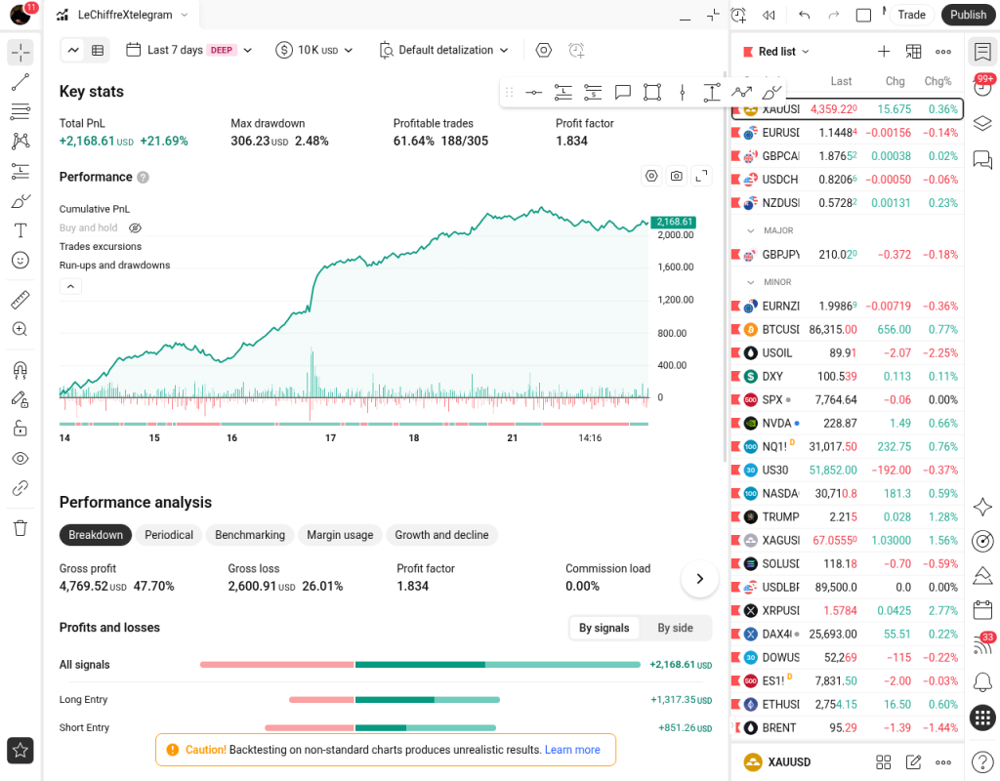
3-minute · 7 days
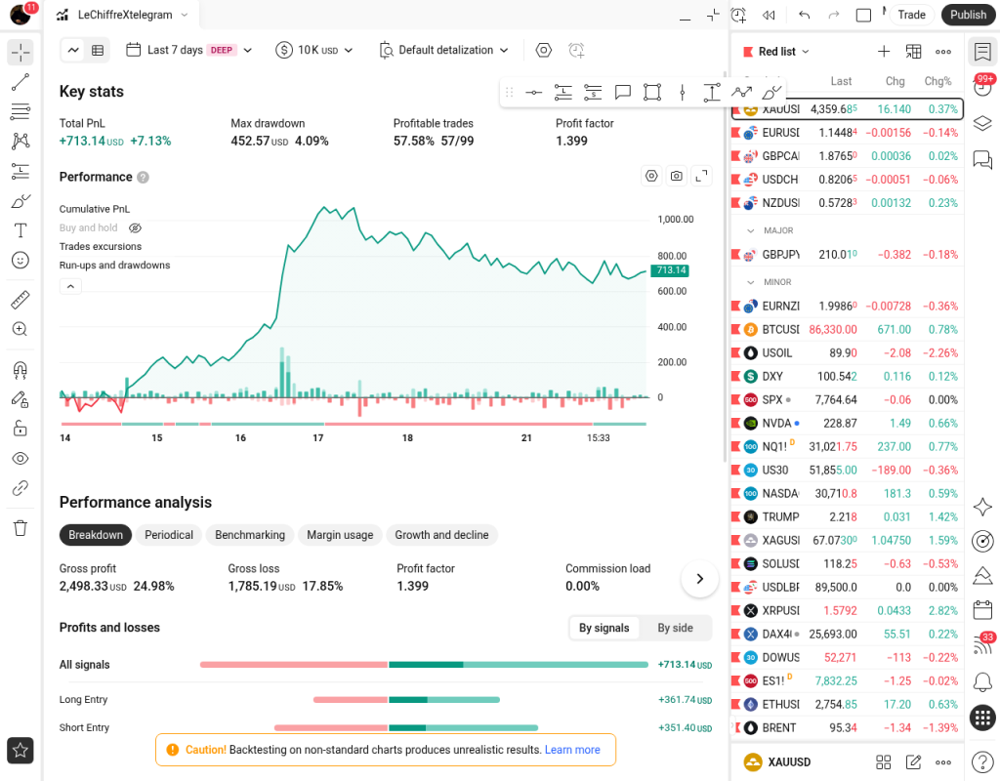
30-minute · 7 days
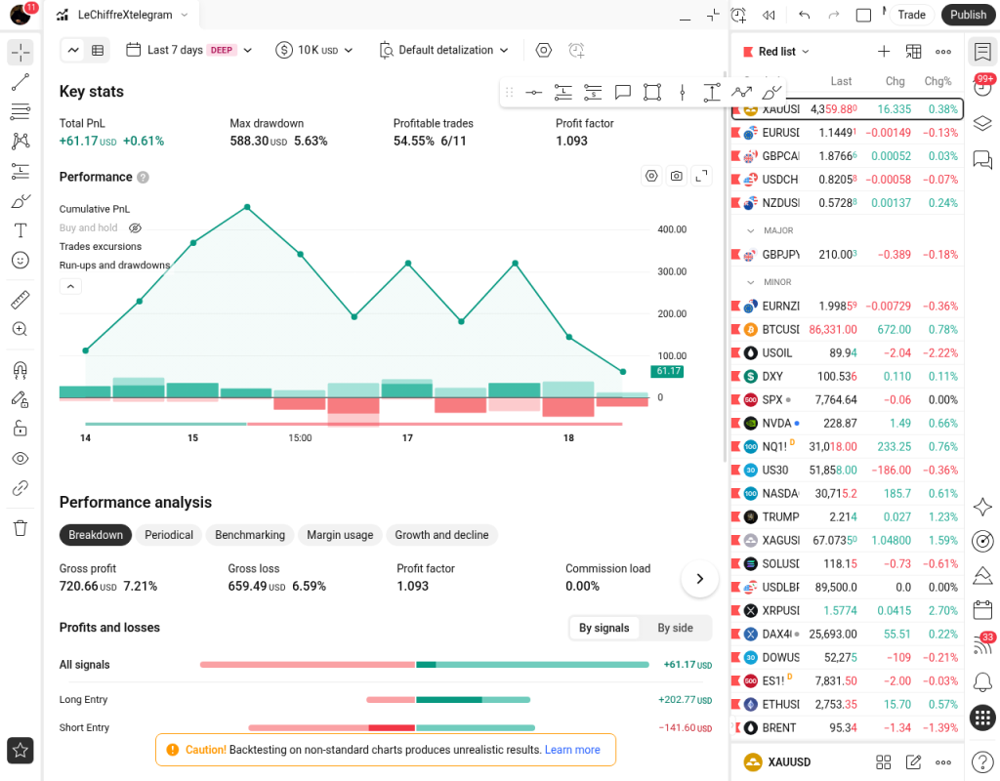
5M LeChiffre is the XAUUSD 5-minute signal channel. A message prepares the setup, the next one states the trade, a later one records the result, and the daily summary closes the book.

A heads-up before the setup is confirmed. This thread shows both a pre-entry buy and a pre-entry sell on XAUUSD 5-minute.
The confirmed signal names the direction and prints entry, take profit, stop, and risk/reward.
The closed trade is posted on its own card. In this example the card reads TRADE WON.
Wins, losses, total trades, win rate, and net PnL for that day’s XAUUSD 5-minute book.
Daily summary for 22/09/2026: 10 wins, 2 losses, 12 trades, 83.3% win rate, net PnL 414.09. PnL shown for 0.1 lot size. One confirmed BUY in the same thread, signaled at 06:30 GMT+3 and closed at 06:40 GMT+3.
PnL shown for 0.1 lot size.
Positive daily summaries from the LeChiffre Telegram channels. Each card is one example day. PnL shown for 0.1 lot size.
1M LeChiffre · 21/09/2026

PnL shown for 0.1 lot size.
3M LeChiffre · 18/09/2026
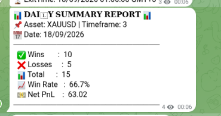
PnL shown for 0.1 lot size.
5M LeChiffre · 21/09/2026
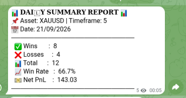
PnL shown for 0.1 lot size.
Fifteen+ LeChiffre · 21/09/2026
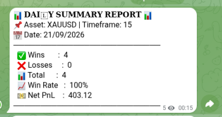
PnL shown for 0.1 lot size.
Public home of the method
https://lechiffre.online/ is the site Elie built for the method: the rules, the signal room, and the custom TradingView indicator. The GitHub profile for this repository already points there.